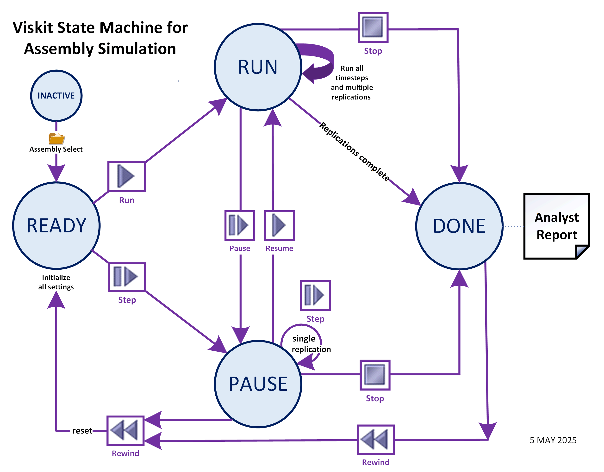

READY state
READY state
This state machine describes how an Assembly Simulation replications progress by using the Viskit VCR buttons.
READY state
 RUN state
RUN state
 PAUSE state
PAUSE state
 DONE state
DONE state
Rewind.
Halt simulation replications, initialize all settings, now in READY state.
Run, Resume.
Enter RUN mode, continue the next simulation replications.
Pause, Step.
Enter PAUSE mode, pause or single-step the next simulation replication.
Stop.
Halt simulation replications, now in DONE state.
 Clear.
Clear all text in console area.
Clear.
Clear all text in console area.
There are two ways to repeat a simulation.
